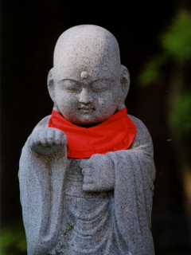

モアイくん
生息地：アマゾンとも呼べる部屋の中
趣味：カメラ(主にNikon)、写真、まれに家電
Twitter:@Moaikken(完全にカメラのことしかつぶやいていません)
苦手なもの：自己紹介,シャッターチャンスなどなど
使用ボード：Arduino Uno
同好会のリーダーっぽいモアイくんです。
去年の夏に発症したカメラの病気が2月ごろには第二ステージのNikonの病気にうつりました。
昼夜を問わずカメラのことしか考えていない今日この頃。
最新のレンズもいいけどニッコールオートが好み。
主にTwitterでカメラ好きの方たちと交流をしております。使用カメラはD7100,F501,F,NikomatELW。
同好会のことを書くと担当は「Arduinoを使っての作品作り」。
プログラミング,Web関連はYYTの足元に及ばず、自動車関連はわからない。レゴは覗いたこともない領域。リーダーとしては没個性。それをいかしてか何なのか中立でまとめるリーダーを目指している。仕事自体は各部署に任せっきりです。
趣味：カメラ(主にNikon)、写真、まれに家電
Twitter:@Moaikken(完全にカメラのことしかつぶやいていません)
苦手なもの：自己紹介,シャッターチャンスなどなど
使用ボード：Arduino Uno
同好会のリーダーっぽいモアイくんです。
去年の夏に発症したカメラの病気が2月ごろには第二ステージのNikonの病気にうつりました。
昼夜を問わずカメラのことしか考えていない今日この頃。
最新のレンズもいいけどニッコールオートが好み。
主にTwitterでカメラ好きの方たちと交流をしております。使用カメラはD7100,F501,F,NikomatELW。
同好会のことを書くと担当は「Arduinoを使っての作品作り」。
プログラミング,Web関連はYYTの足元に及ばず、自動車関連はわからない。レゴは覗いたこともない領域。